Orthodox Youth Festival History
The Orthodox Youth Festival is an annual gathering of young Orthodox men and women that has been running since 2005. The goal of the event is to meet like-minded young people and to grow in our Faith through community and spiritual talks given by priests, monks, nuns and sometimes laypeople. This is a list of past Festivals and their themes:
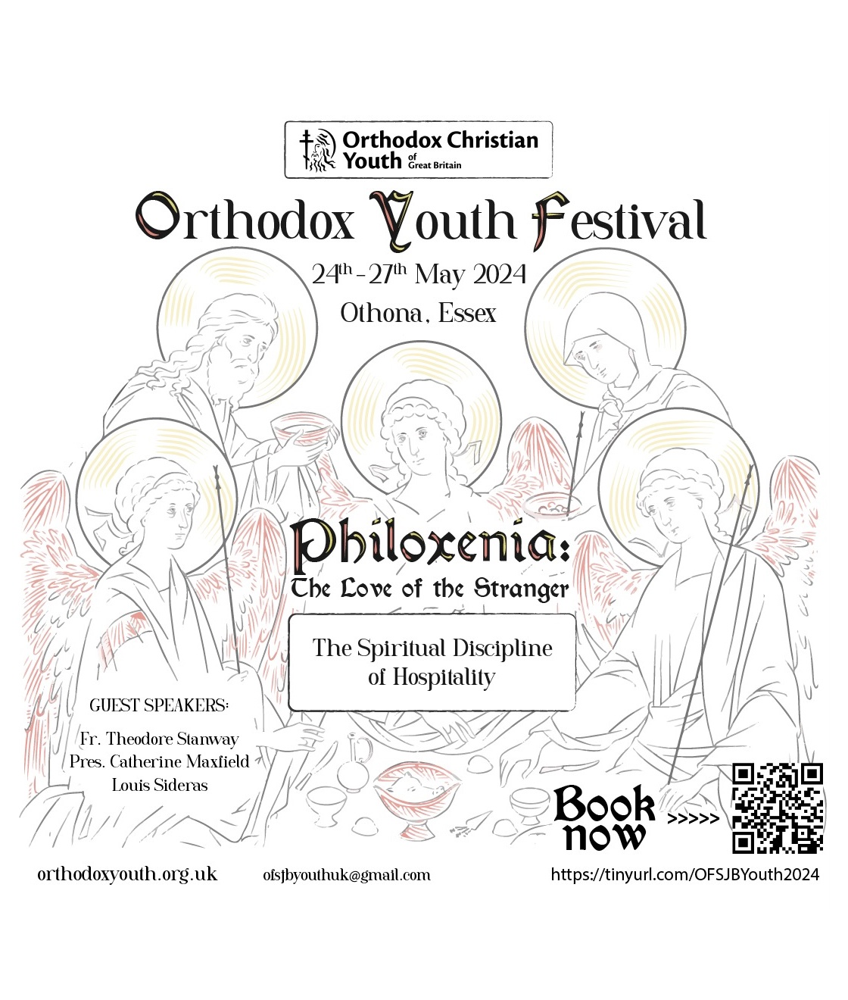
Orthodox Youth Festival 2024
Philoxenia: The Love of the Stranger
Location:
Othona Community, Bradwell-on-Sea
Local saint:
Saint Peter
Date:
24 - 27 May 2024
Speakers:
Fr. Theodore Stanway
Fr. Mark Shillaker
Pres. Catherine Maxfield
Louis Sideras
Poster design:
Artiom Barkun
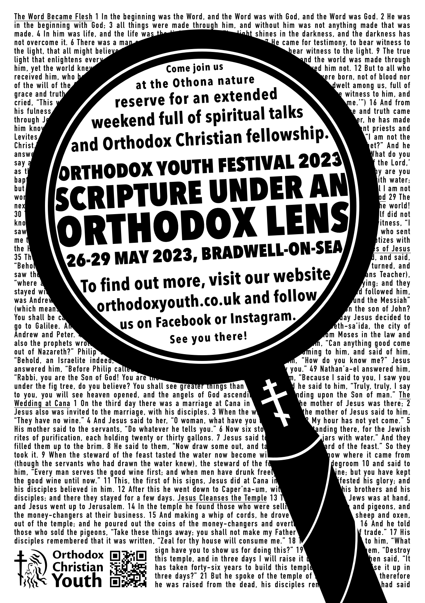
Orthodox Youth Festival 2023
Scripture Under an Orthodox Lens
Location:
Othona Community, Bradwell-on-Sea
Local saint:
Saint Peter
Date:
26 - 29 May 2023
Speakers:
Sr. Theodora
Fr. Andrew Stephen
Damick
Fr. Justin Venn
Marina Carrier
Marina Robb
Poster design:
Rdr. Joachim Vesely
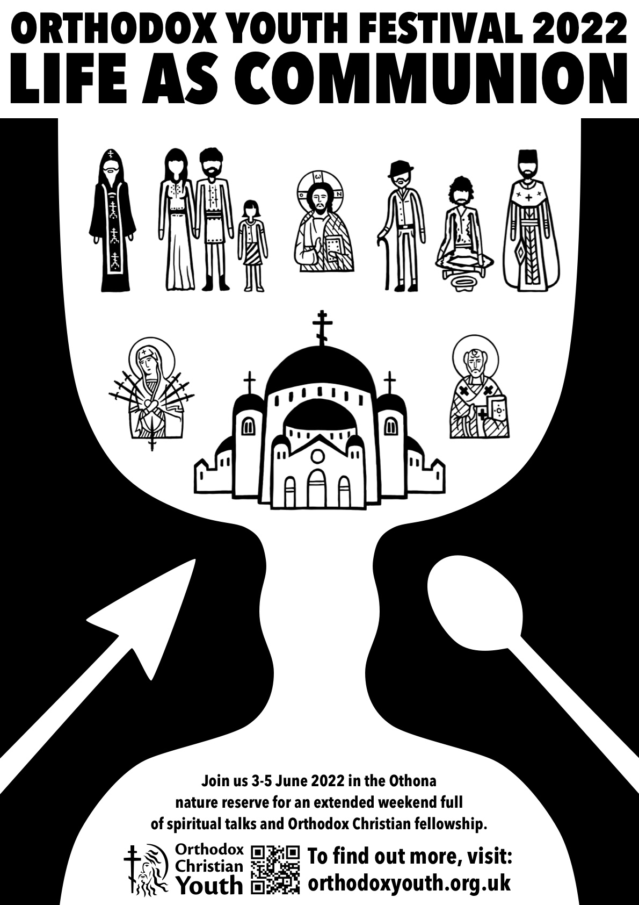
Orthodox Youth Festival 2022
Life as Communion
Location:
Othona Community, Bradwell-on-Sea
Local saint:
Saint Peter
Date:
3 - 5 June 2022
Speakers:
His Eminence Archbishop Nikitas
Fr.
Alexander Tefft
Archpriest Stephen Platt
Marina Robb
Poster design:
Rdr. Joachim Vesely
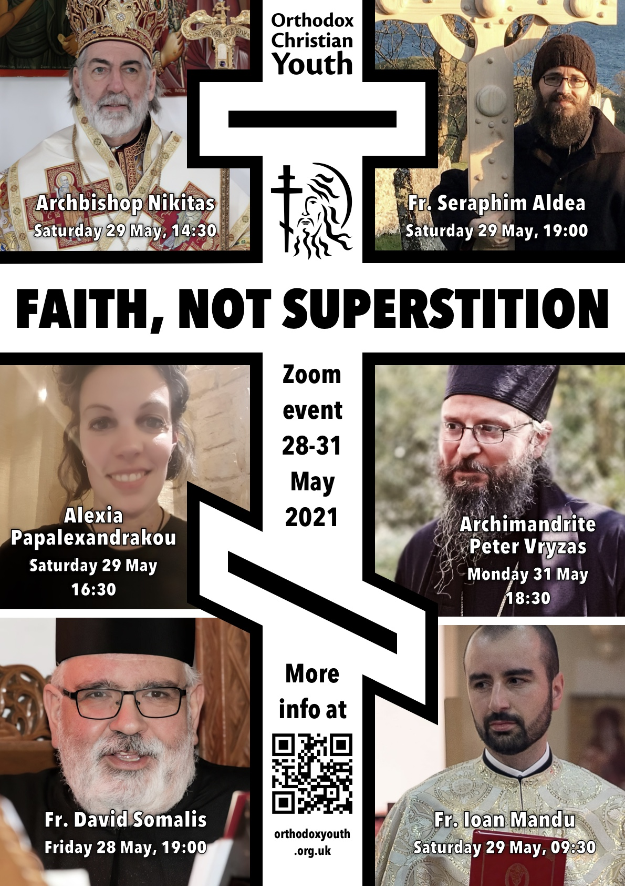
Orthodox Youth Festival 2021
Faith, not Superstition
Location:
Zoom
Date:
28 - 31 May 2021
Speakers:
His Eminence Archbishop Nikitas
Fr.
David Somalis
Fr. John Mandu
Alexia Papalexandrakou
Fr.
Seraphim Aldea
Archimandrite Peter Vryzas
Poster design:
Rdr. Joachim Vesely
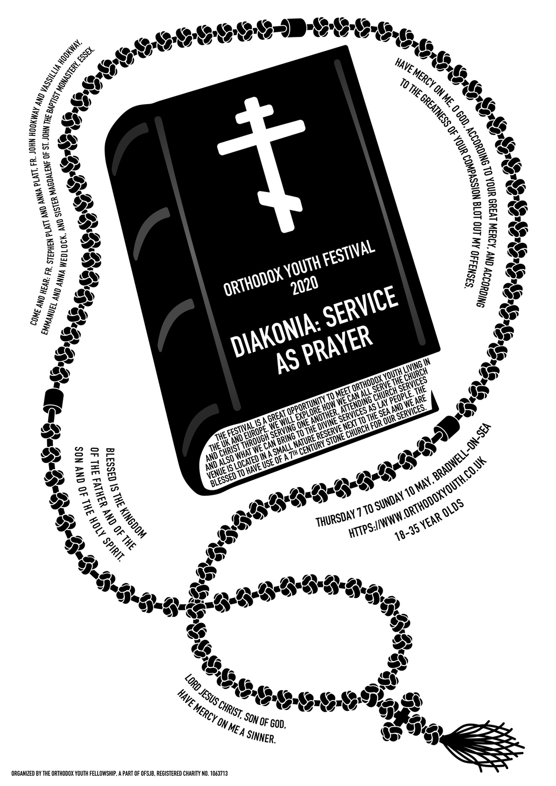
Orthodox Youth Festival 2020
Diakonia: Service as Prayer
Location:
Zoom
Date:
7 - 10 May 2020
Speakers:
Fr. Stephen Platt
Sr. Magdalen
Fr.
John Hookway
Anna & Emmanuel Wedlock
Poster design:
Rdr. Joachim Vesely
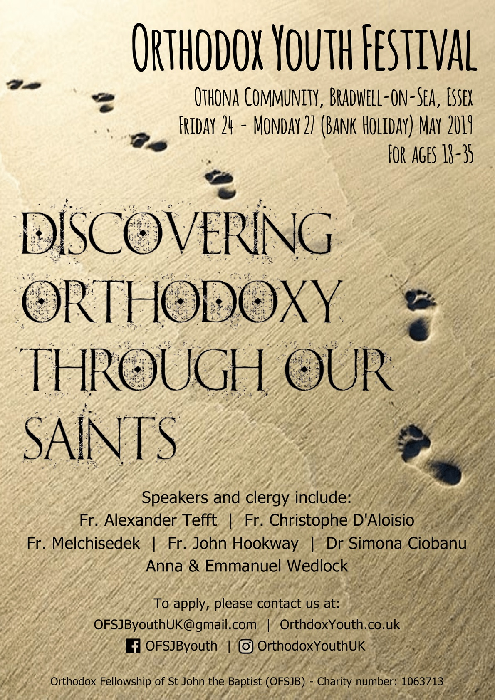
Orthodox Youth Festival 2019
Discovering Orthodoxy Through our Saints
Location:
Othona Community, Bradwell-on-Sea
Local saint:
Saint Peter
Date:
24 - 27 May 2019
Speakers:
Fr. Alexander Tefft
Fr. Christophe
D'Aloisio
Fr. John Hookway
Dr. Simona Ciobanu
Anna &
Emmanuel Wedlock
Poster design:
Thalia Conomos
Photo from
Pixabay
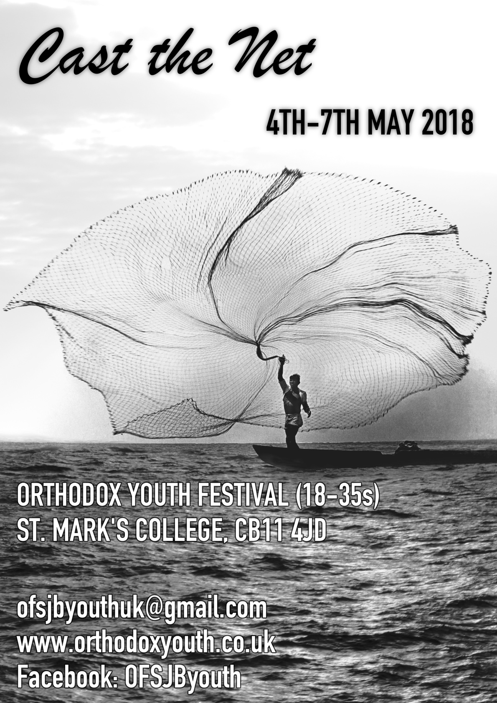
Orthodox Youth Festival 2018
Cast the Net
Location:
St. Mark's College, Audley End
Local saint:
Saint Mark
Date:
4 - 7 May 2018
Speakers:
Fr. Stephen Platt
Fr. Christodoulos
Christodoulou
Fr. Melchisedek
Gabriela Pipirig
Anna &
Emmanuel Wedlock
Poster design:
Thalia Conomos (text layout Rdr.
Joachim Vesely)
Photo by Leo Matiz
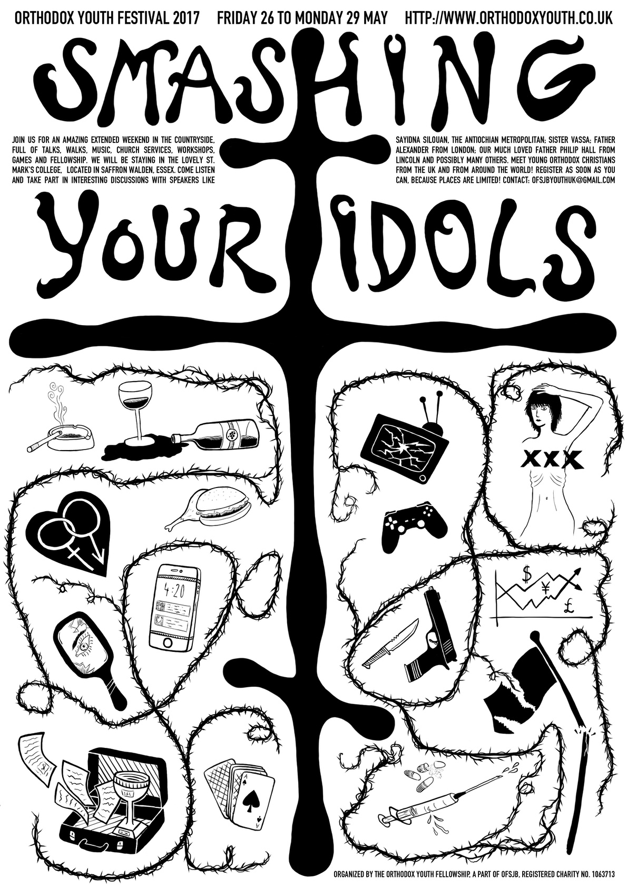
Orthodox Youth Festival 2017
Smashing Your Idols
Location:
St. Mark's College, Audley End
Local saint:
Saint Mark
Date:
26 - 30 May 2017
Speakers:
His Eminence Metropolitan Silouan
Fr.
Alexander Tefft
Sr. Vassa Larin
Fr. Philip Hall
Carsten
Lorenz
Poster design:
Rdr. Joachim Vesely
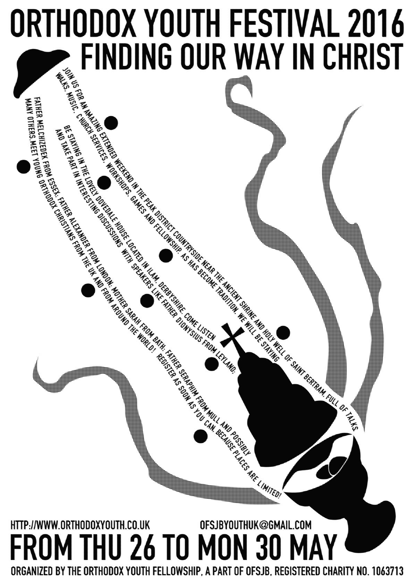
Orthodox Youth Festival 2016
Finding our Way in Christ
Location:
Dovedale House, Ilam
Local saint:
Saint Bertram
Date:
26 - 30 May 2016
Speakers:
Fr. Melchisedek
Fr. Alexander
Tefft
Mother Sarah
Fr. Seraphim Aldea
Fr. Dyonisios
Higgs
Poster design:
Rdr. Joachim Vesely
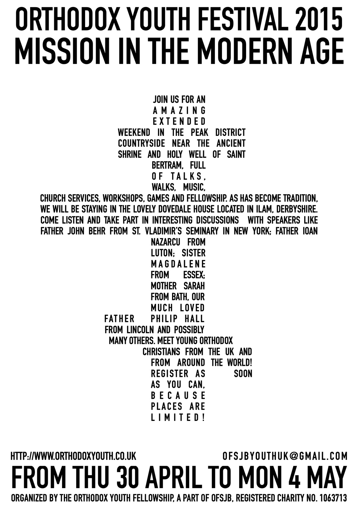
Orthodox Youth Festival 2015
Mission in the Modern Age
Location:
Dovedale House, Ilam
Local saint:
Saint Bertram
Date:
30 April - 4 May 2015
Speakers:
Fr. John Behr
Fr. Ioan Nazarcu
Sr.
Magdalene
Fr. Philip Hall
Poster design:
Rdr. Joachim Vesely
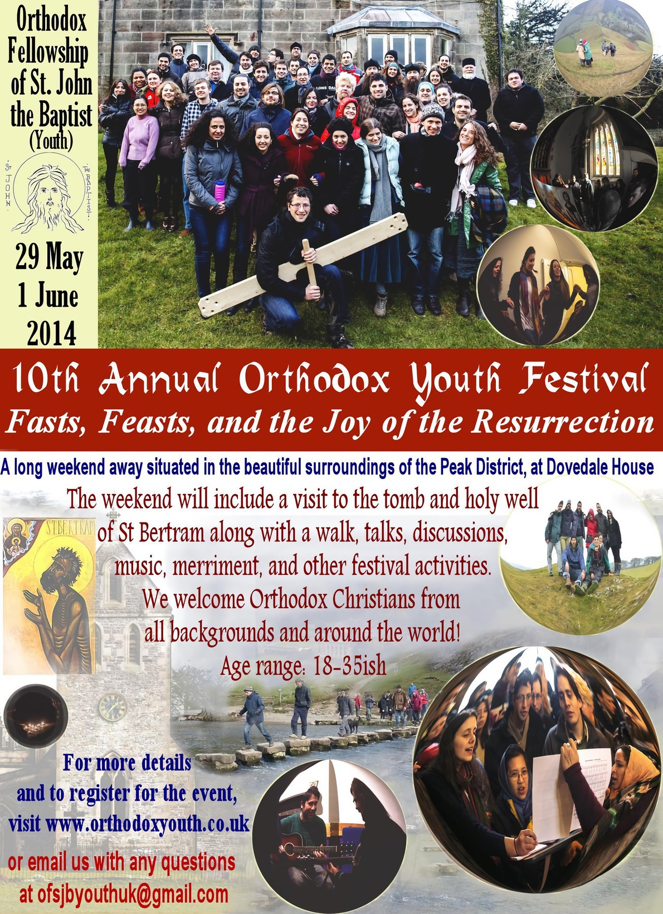
Orthodox Youth Festival 2014
Fasts, Feasts, and the Joy of the Resurrection
Location:
Dovedale House, Ilam
Local saint:
Saint Bertram
Date:
29 May - 1 June 2014
Speakers:
Fr. Andreas Andreopoulos
Fr.
Christopher Neill
Fr. Philip Hall
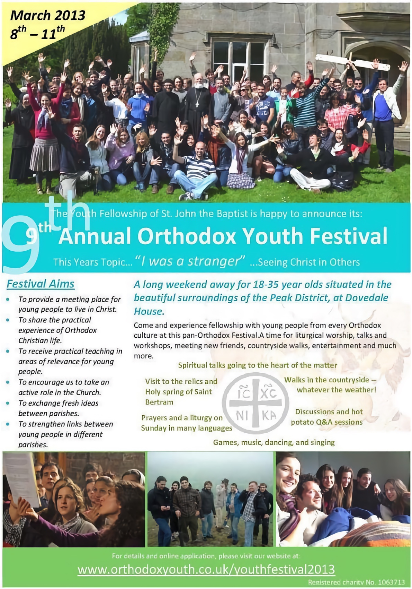
Orthodox Youth Festival 2013
Seeing Christ in Others
Location:
Dovedale House, Ilam
Local saint:
Saint Bertram
Date:
8 - 11 March 2013
Speakers:
Fr. Stephen Platt
Fr. Kirill and
Fr. Methody from Russia
Fr. Philip Hall
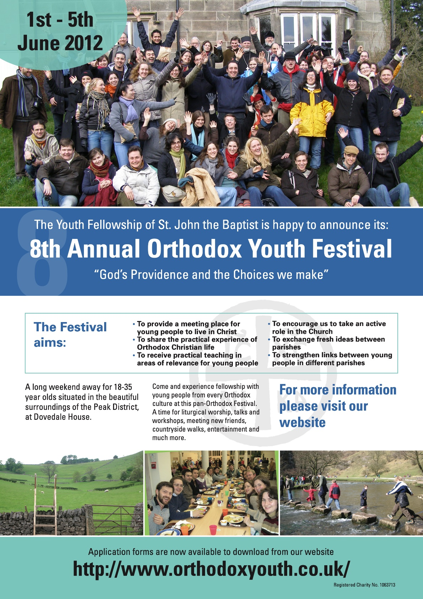
Orthodox Youth Festival 2012
God's Providence and the Choices we Make
Location:
Dovedale House, Ilam
Local saint:
Saint Bertram
Date:
1 - 5 June 2012
Speakers:
His Eminence Metropolitan Kallistos
Ware
Fr. Alexander Tefft
Fr. Nikolai Sakharov
Fr. Timothy
Curtis
Fr. Stephen Platt
Female panel with Katerina, Danae
Conomos, Frances Jennings, Vasilia, Marina, and Sr. Silouani
Orthodox Youth Festival 2011
Made in the Image of God
Location: Dovedale House, Ilam
Local saint: Saint Bertram
Date: 29 April – 2 May 2011
Speakers: His Eminence Metropolitan Kallistos Ware, Fr.
Stephen Platt, Fr. Melchisedek, Fr. Gregory Hallam, Fr. Timothy Curtis,
Dimitri Conomos
Orthodox Youth Festival 2010
Why are the Fathers Still Relevant Today?
Location: Dovedale House, Ilam
Local saint: Saint Bertram
Date: 30 April - 3 May 2010
Orthodox Youth Festival 2009
Personhood: Living Orthodoxy in the Modern World
Location: Dovedale House, Ilam
Local saint: Saint Bertram
Date: May 2009
Orthodox Youth Festival 2008
Freedom to Become
Location: Dovedale House, Ilam
Local saint: Saint Bertram
Date: March 2008
Orthodox Youth Festival 2007
Friendship and Orthodox Christianity
Location: Dovedale House, Ilam
Local saint: Saint Bertram
Date: May 2007
Orthodox Youth Festival 2006
“I will praise the Lord as long as I live” (Psalm 103)
Location: Dovedale House, Ilam
Local saint: Saint Bertram
Orthodox Youth Festival 2005
Priesthood and Service in the Church
Location: Dovedale House, Ilam
Local saint: Saint Bertram
If you attended one of the older festivals and you remember any of the details we are missing, the dates or speakers, or have a copy of any of the absent Festival posters, please do let us know and we will happily update the listings.
Privacy
This site complies with current laws concerning personal data, we do not
store any of your details.